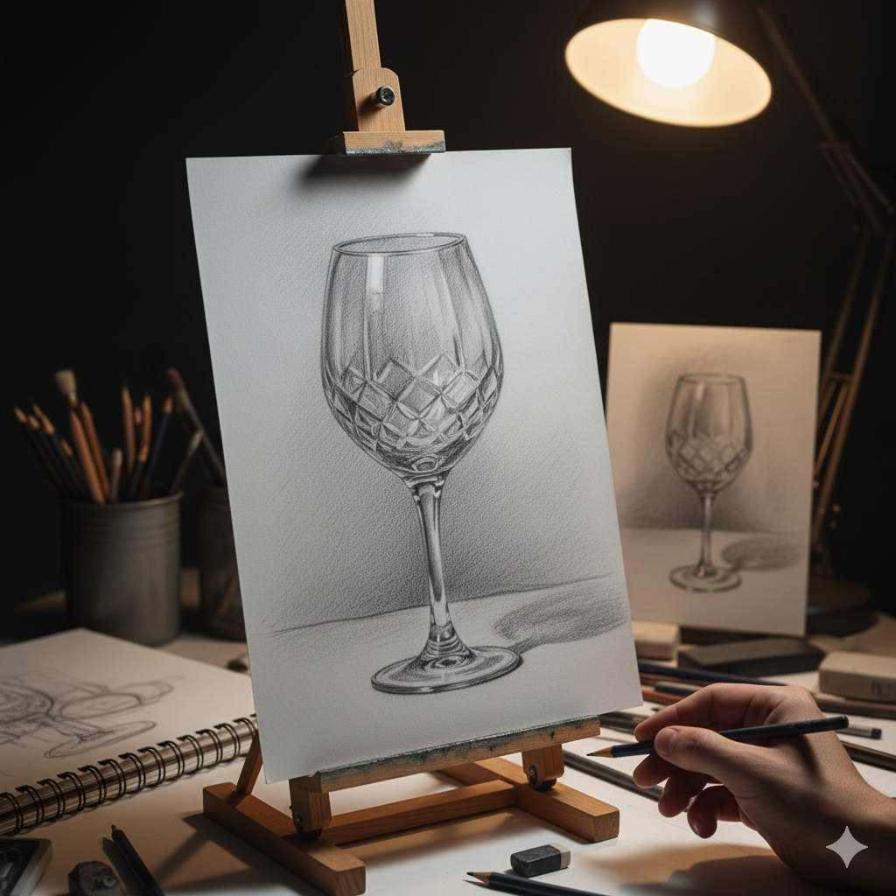
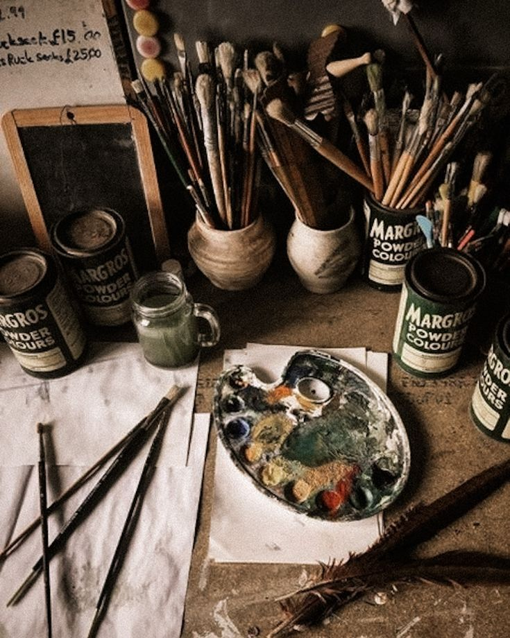
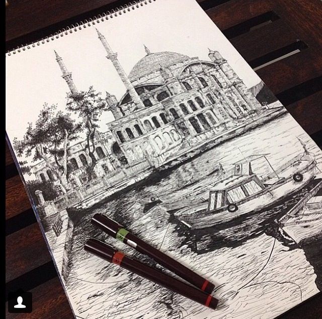
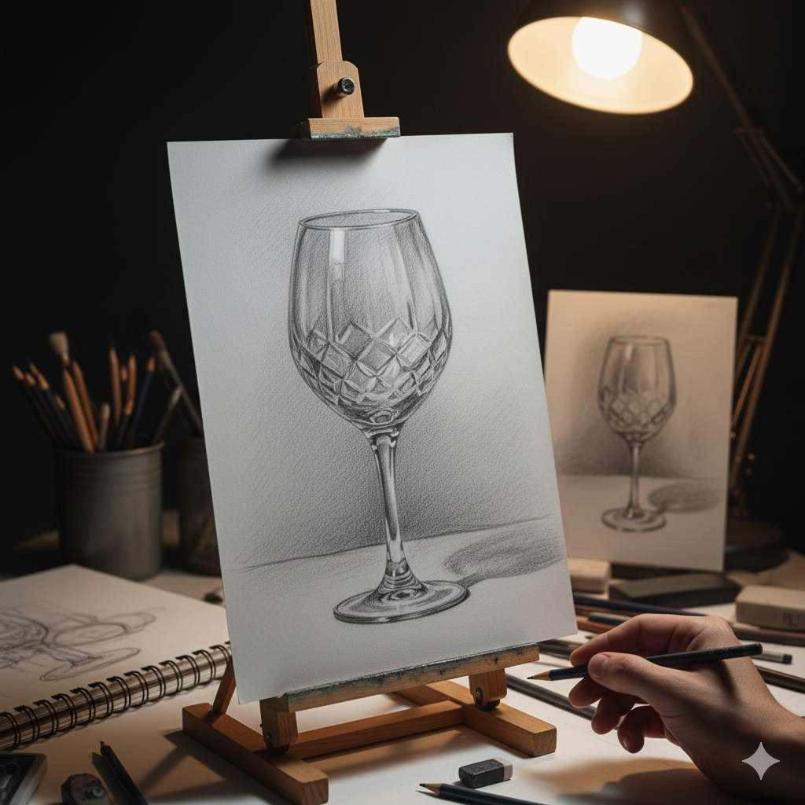
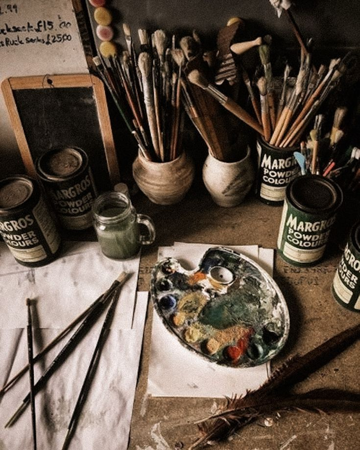
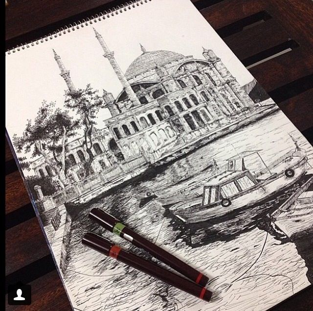

Uzman ve Deneyimli Kadro
Alanında uzman, sanat üniversitelerinden mezun eğitmenlerimizle teorik bilgi ve pratik deneyimi birleştiriyoruz.
Biz, sanatı sadece bir hobi değil, bir yaşam biçimi olarak gören, her yaştan ve seviyeden sanatsevere ilham veren bir topluluğuz. 2020 yılında kurulan Sanat Atölyem, karakalemden yağlı boyaya kadar geniş bir yelpazede, uygulamalı ve usta-çırak temelli eğitimler sunar. Vizyonumuz; her öğrencinin kendi sanatsal sesini keşfetmesini sağlamaktır.
Alanında uzman, sanat üniversitelerinden mezun eğitmenlerimizle teorik bilgi ve pratik deneyimi birleştiriyoruz.
Derslerin %80'i uygulamalı atölye çalışmalarından oluşur. Portfolyonuzu güçlendirecek projelerle mezun olursunuz.
Geniş, ışık alan ve tüm materyallere sahip atölyemizde, diğer sanatseverlerle işbirliği yapma fırsatı bulursunuz.
Her yaştan bireyin sanatla bağ kurmasını sağlamak, yaratıcılığı teşvik etmek ve öğrencilerimize özgün bir sanat dili kazandırmak için nitelikli, sıcak ve güvenli bir öğrenme ortamı sunuyoruz.
Türkiye’nin dört bir yanında sanatseverlere ulaşan, yenilikçi ve ilham verici eğitim anlayışıyla geleceğin sanatçılarını yetiştiren öncü bir atölye olmak.
2020 yılında yaratıcı ruhları bir araya getirme hayaliyle kurulan Sanat Atölyem, küçük bir sınıfta başlayan
yolculuğunu kısa sürede geniş bir sanat topluluğuna dönüştürdü. Kuruluşumuzdan beri amacımız, her öğrencinin
kendi sanat dilini keşfetmesine rehberlik etmek oldu.
İlk yıllarda yalnızca karakalem ve temel çizim eğitimleri verilirken, artan ilgi ve talepler doğrultusunda
eğitim yelpazemizi genişlettik; sulu boya, akrilik ve karışık teknikler gibi farklı disiplinleri de
programımıza dahil ettik.
Bugün profesyonel eğitmen kadromuz ve yaratıcı atölye ortamımızla, sanatın herkes tarafından
ulaşılabilir olduğuna inanarak büyümeye ve gelişmeye devam ediyoruz.

Baş Eğitmen / Karakalem & Portre
Mimar Sinan Güzel Sanatlar Üniversitesi resim bölümü mezunu. 10 yılı aşkın süredir profesyonel portre sanatçısı.

Sulu Boya Uzmanı
Dokuz Eylül Üniversitesi Grafik Tasarım ve İllüstrasyon alanında yüksek lisans yaptı. Transparan teknikler konusunda otorite.
Akrilik & Doku Çalışmaları
Yeditepe Üniversitesi Sanat ve Kültür Yönetimi mezunu. Modern sanat ve soyut çalışmalar üzerine yoğunlaşmıştır.
 




